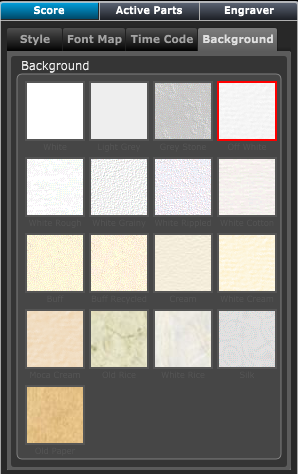

Score Panel - Background Section
Score Panel - Background Section
If the Score Layout panel is not showing click on the Layout button at top right of Control Bar or type "Shift-L" to open the panel.
Then choose the Score panel.
If necessary click on the Background tab to display the background settings.

The change the paper background in your scores, click on the desired paper icon.